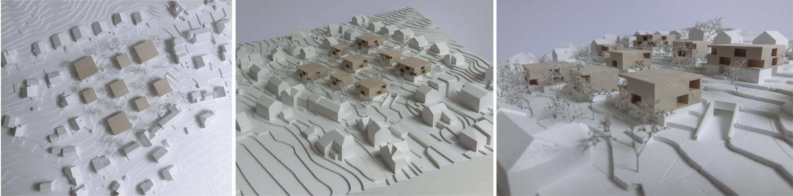
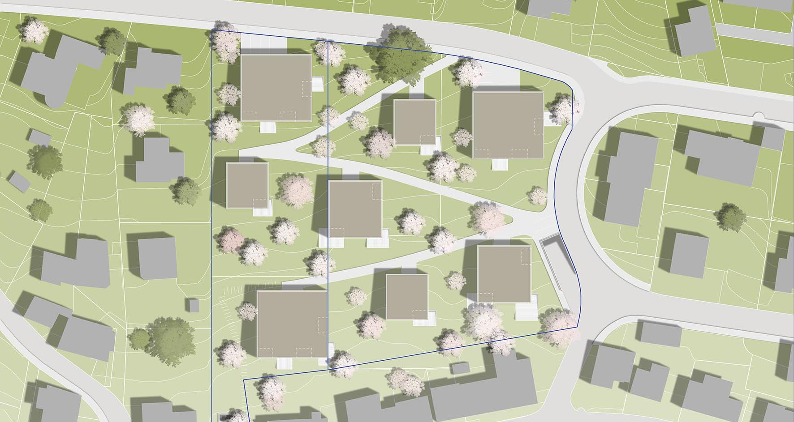
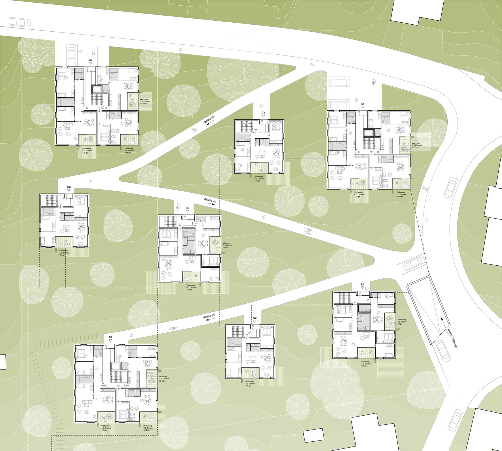
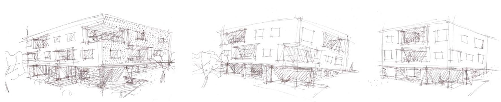
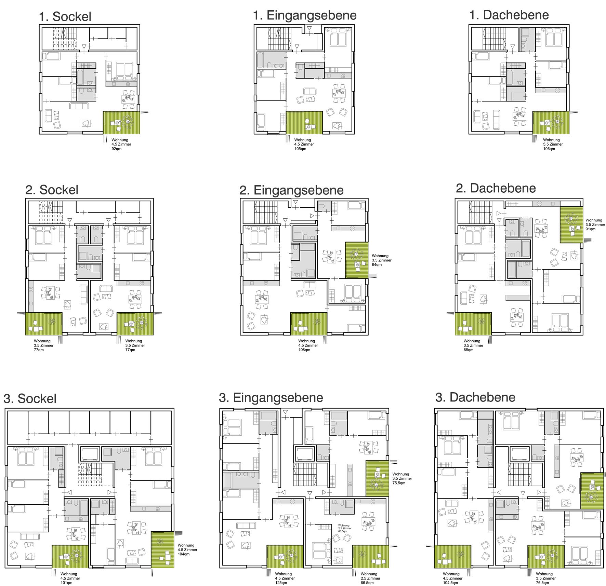
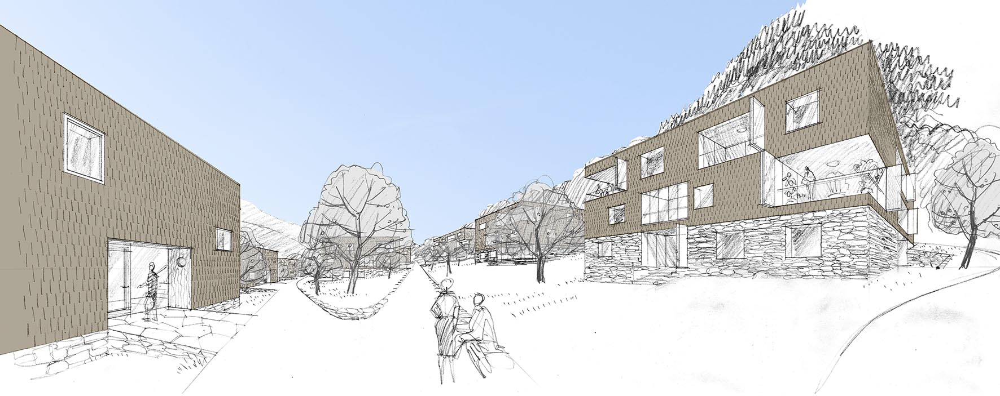
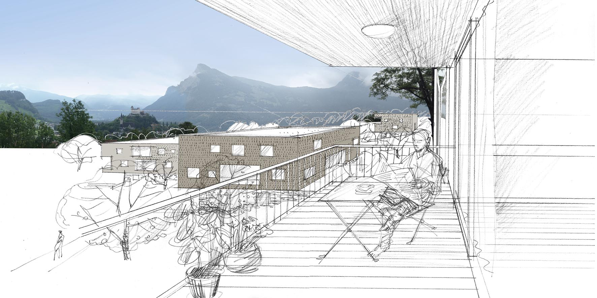

-

Umgebungsmodell

Lageplan

Zugangsstockwerk

Typ 1/2/3

Grundriss Wohnungen

Aussenperspektive

Loggiaperspektive
STÄDTEBAU
Der Vorschlag für die Überbauung Pralawisch orientiert sich zum einen an der umliegenden Bebauung mit seiner meist kleinteiligen Körnung von Einfamilienhäusern und dem abfallenden Gelände und führt dabei die bestehende Obstwiese fort. Drei-geschossige quadratische Baukörper in drei unterschiedlichen Größen,werden hierzu spielerisch auf dem Gelände positioniert und gewährleisten dabei die maximale Aussicht und geringstmögliche Einsicht untereinander. Die sich nach allen Seiten orientierenden Freibereiche der Einheiten unterstützen diese Absicht. Die Obstwiese wird zwischen den Baukörpern weitergeführt. Ein mit den Höhenlinien verlaufender hangseitiger Weg verbindet die Einheiten möglichst gefällearm miteinander und gewährleistet die hindernisfeie Erschließung, die Zufahrt in Notfällen und Anlieferungen.
ERSCHLIESSUNG
Die Tiefgaragen werden bauabschnittsbezogen für BA 1(2031/2032/2033) über eine Zufahrt von der Pädergross und für BA
2 (1405/4366) von der Obergass erschlossen. Die Topografie wird dabei genutzt die Ein-und Ausfahrten in das Gelände
zu integrieren. Die Tiefgaragen werden aufgrund der Hanglage höhenweise gestaffelt um Aushub und den Aufwand für Anbindung
an die jeweiligen Wohnhäuser gering zu halten. Bis auf das nördlichste Wohnhaus A2 sind alle Wohnhäuser direkt an die
jeweiligen Tiefgaragen mit den Treppenhäusern angeschlossen. Dieses ist über das Treppenhaus des Wohnhauses C3 mit der
Erschließungsebene verbunden. Ein Aufzug für die Erschließung wäre denkbar.
Ein mit den Höhenlinien verlaufender hangseitiger Weg verbindet die Einheiten möglichst gefällearm (max. 6%) miteinander
und gewährleistet die hindernisfeie Erschließung, die Zufahrt in Notfällen und bei Anlieferungen. Die Gebäude sind Hangseitig
von diesem Weg auf der Nord-Ostseite erschlossen.
Die Besucherparkplätze befinden sind rund um das Grundstück, bzw. in der Tiefgarage.
WOHNUNGSMIX
Aufgrund der ungerichteten Grundfläche der drei unterschiedlich großen Baukörper und der Möglichkeit die Räume nach allen Seiten zu orientieren, sind differenzierte Wohnungsgrößen und somit ein breiter Wohnungsmix einfach realisierbar. Typ A kann dabei bis zu einem Dreispänner, Typ B und C als Zweispänner organisiert werden.
AUSSENRÄUME
Die versetzten und sich nach allen Seiten orientierenden privaten Terrassen und Loggien, nutzen den Versatz der Gebäude um zusammen mit der umliegenden Obstwiese einen großzügigen, einfamilienhausgleichen Freiraumeindruck für die Freisitze zu erzeugen. Die Loggien sind dabei zusätzlich mit der Möglichkeit versehen, diese bei Föhn oder schlecht Wetter mit Glasfaltwänden zu verschließen und ganzjährig nutzbar zu machen.In der Obstwiese befinden sich zusätzlich Spiel und Ruheplätze.